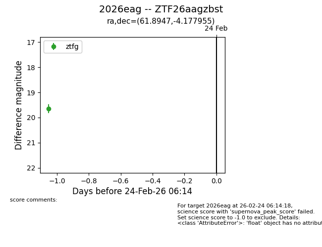
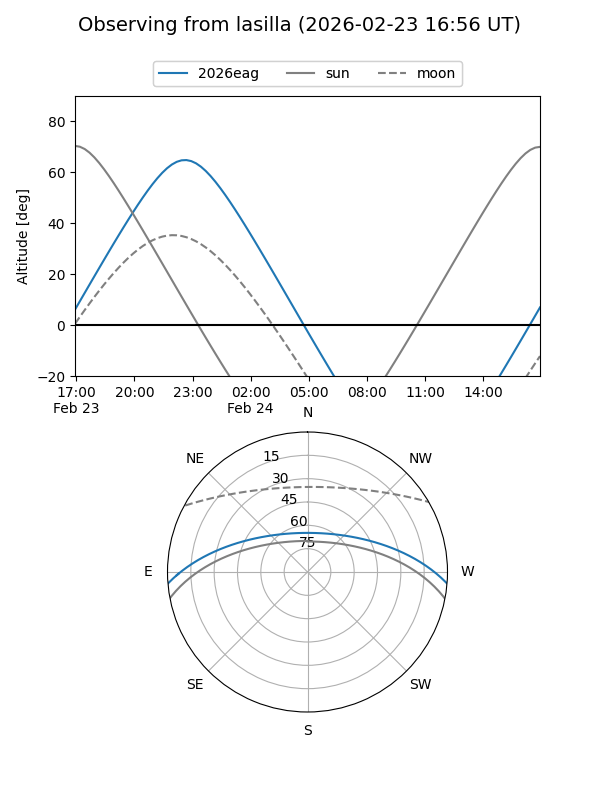
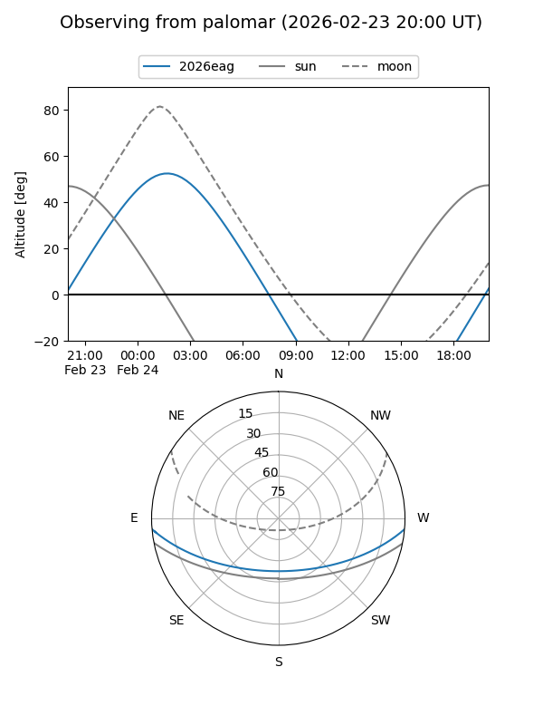

2026eag
Target 2026eag at 2026-02-24 09:08
Aliases and brokers:
FINK: link
Lasair: link
ALeRCE: link
TNS: link
YSE: link
alt names
ZTF26aagzbst (ztf,fink_ztf)
2026eag (tns,yse)
Coordinates:
equatorial (ra, dec) = 61.8947,-4.17795
equatorial (HMS+DMS) = 04:07:34.73,-04:10:40.64
galactic (l, b) = (195.7193,-37.96222)
Flags:
Photometry:
last ztfg=19.64
1 ztfg detections
Lightcurve

Visibility


Additional plots